Proof of concept documentation
Four AI agents research a technical question and write a cited report. Every model call runs on a small local model, and plain code checks every fact before it reaches the report.
| Project | Research Agents (Multi-Agent AI Research Assistant) |
| Prepared by | Sahana Ganeshvel |
| Version | 1.1 · 18 November 2026 (branded UI release) |
| Live demo | research-agents-blush.vercel.app (replays a real run) |
| Source code | github.com/SahanaGaneshvel/research-agent |
| Status | Working POC · 139 automated tests passing |
Contents
The document follows the team’s delivery template. Part A is the mandatory project document (sections 1 to 13). Part B is the additional model documentation, because the solution uses a language model. Part C lists the final deliverables and ends with a short summary for content development.
Part A
Sections 1 to 13 of the team template.
Research Agents (full name: Multi-Agent AI Research Assistant) is a small AI research team that runs on a laptop. You give it a technical question, for example “Research the latest open-source multimodal models suitable for on-premise deployment. Compare their capabilities, benchmarks, hardware requirements, licensing and limitations.” Four specialised agents then search the web, Hugging Face model cards, arXiv papers and GitHub, compare the models they find, check the evidence, and write a structured 10-section technical report in which every source is a link that was actually opened.
The language model is Qwen3.5, served locally by Ollama; there are no paid APIs and no API keys. The agents are coordinated by LangGraph. The POC has two interfaces: a Streamlit app and a Next.js web app that shows every step of a run as a live flow diagram. For this version I moved both of them to the GenAI Protos brand.
| User | Need |
|---|---|
| AI consultants and solution architects (for example at GenAI Protos) | A fast, cited first pass on which models or tools fit a client’s brief, before a deeper manual review. |
| Technical leads evaluating on-premise AI | A comparison of open models by licence, size and hardware needs, with clear separation of facts, estimates and opinions. |
| Researchers and analysts | A quick scan of recent papers, repositories and model cards on a topic, with the sources listed. |
Context. The users work where cost, privacy and trust matter: they may not be allowed to send data to cloud APIs, they may only have ordinary laptops, and they must be able to trace every statement back to a source. I built and tested the POC on that kind of machine: a 4-core Intel i5-1155G7 laptop with 8 GB RAM and no GPU.
Objective. To show that a small team of cooperating agents on a free, local model can turn one question into a structured, cited technical report without inventing facts, and that the design is simple enough to explain and test.
In scope
Four agents (Research, Comparison, Evaluation, Report); LangGraph orchestration; web, Hugging Face, arXiv and GitHub retrieval; local Qwen3.5 through Ollama; Pydantic-validated structured output; 10-section Markdown report; Streamlit UI; Next.js flow UI with FastAPI streaming; automated tests; GenAI Protos branding.
Out of scope
Enterprise features (login, multiple users, database); running benchmarks; reading full PDFs; GPU deployment; cloud models of any kind. The brief asked for a small, explainable POC, not a platform.
| Success criterion | Result | Evidence |
|---|---|---|
| Four specialised agents collaborate through an explicit LangGraph workflow | Met | orchestration/workflow.py; execution-order tests |
| Only a local model through Ollama; no paid API, never a silent fallback | Met | Cloud models refused in code; 0 paid calls |
| Report has the 10 required sections and downloads as Markdown | Met | Example report; report tests check section order |
| Every reference is a source that was actually retrieved | Met | References built by code; 0 unknown citations in the example run |
| No fabricated benchmark values; never claims a benchmark was run | Met | Score kept only if found in its source; fixed disclaimer in every report |
| Open-weight models kept apart from OSI open-source licences | Met | Rule-based licence classification in code |
| Fails gracefully (Ollama down, no internet, no sources, bad model output) | Mostly met | Tests for each case. Gap found 18 Nov: a broken Ollama runtime passes the start-up check (section 11) |
| Runs on the available hardware (8 GB laptop, CPU only) | Met | With qwen3.5:2b; the 4B default ran out of memory |
| Automated tests | Met | 139 offline tests passing |
I kept one rule throughout: the model does the language work, and code does anything that has to be exact.
| Task | Done by | Why |
|---|---|---|
| Choosing search terms, reading sources, filling table rows, writing prose | Model | Needs language understanding |
| Calling tools; URLs, titles, dates, citation IDs | Code | Must be exact; a 2 to 4B model is unreliable at tool calling |
| Which sources support each table row | Code | The model never chooses its own citations |
| Licence and parameter count; licence category | Code | From the Hugging Face and GitHub APIs and fixed rules |
| Benchmark verification and memory estimates | Code | Text matching and arithmetic, labelled as such |
| Tables, methodology, references | Code | Generated from structured state, always consistent |
| Alternative | Why it was not chosen |
|---|---|
| One large prompt | I tried this first. Asked to build the whole comparison table in one go, the 2B model returned an empty table. Splitting the job into small steps fixed it. |
| Agent decides which tools to call (ReAct-style loop) | Small models are unreliable at multi-step tool calling, and a loop can run for a very long time on a CPU. A fixed plan run by code is predictable and easy to test. The model still chooses what to search for. |
| Paid cloud model (OpenAI, Anthropic, Gemini) | Ruled out by the brief because of cost, API keys and data leaving the machine. |
| Framework wrappers for the model client | I wrote a plain REST client of about 200 lines instead. It is easier to read and debug, and it has no version conflicts. |
| Running Comparison and Evaluation in parallel | Both only need Research’s output, but one model on one CPU queues requests anyway, so parallel runs would not be faster. |
Research finds and reads sources; Comparison builds a model-by-model table; Evaluation checks benchmark scores and estimates memory; Report writes the 10-section report.
Sources are numbered S1 to Sn by code. The model may only write [S3]; code owns every URL, strips unknown IDs and builds the references.
A score is kept only if that number and the benchmark name appear in the source it cites. Rejected scores are counted in the report.
No sources means no claims. Every fallback, failed step and removed sentence is labelled in the report and the UI.
Qwen3.5 through Ollama on a laptop CPU. No API keys, no cost per call, and nothing leaves the machine except the web searches.
A Streamlit app and a Next.js flow page, both in the GenAI Protos brand: logo, Google Sans, Primary Blue, navy and near-square cards.
| Component | What it does |
|---|---|
agents/ | One file per agent, each with its own system prompt and code-side checks |
orchestration/ | LangGraph workflow, shared typed state with reducers, live progress events, command-line runner |
services/ | Ollama client (JSON-schema output, validation, retry, clear errors); web, Hugging Face, arXiv and GitHub search; page fetcher that respects robots.txt; file cache |
schemas/, utils/ | Pydantic models per agent; citation registry and audit; per-model evidence grouping |
app.py + .streamlit/ | Branded Streamlit app: question, depth, live agent cards, four results tabs, Markdown download |
api/server.py | FastAPI server that runs the same workflow and streams each step as Server-Sent Events |
web/ | Branded Next.js page: question and depth, live run or replay of a recorded run, clickable flow diagram, report viewer |
tests/ | 139 offline tests; the model and all network calls are replaced by fakes |
#1F5BF0 for actions and active states, Charcoal text, light-blue page background, 2 px corners, flat white cards with thin borders, Lucide outline icons, and the brand favicon.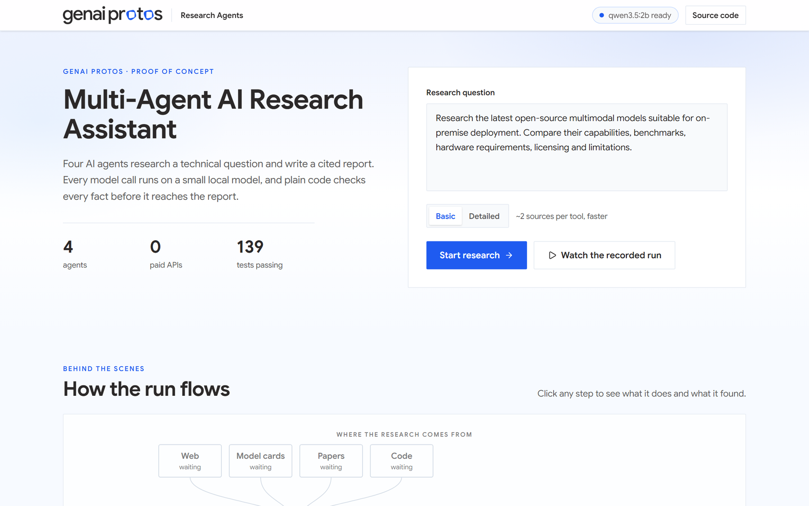
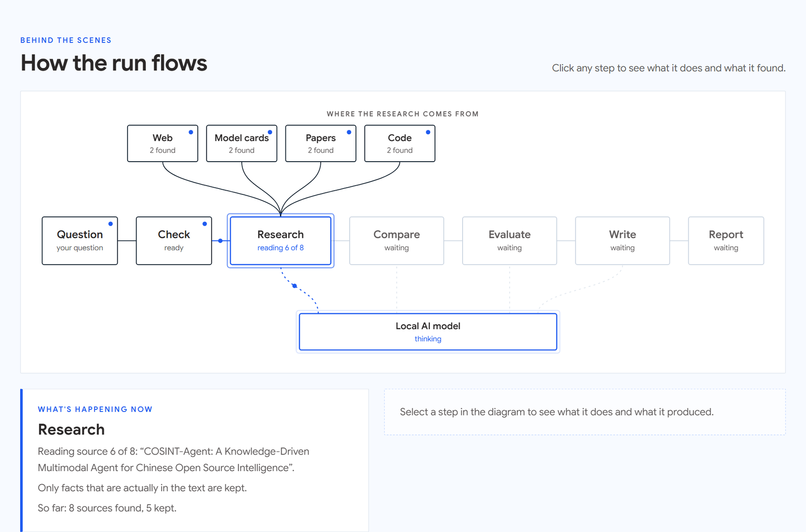
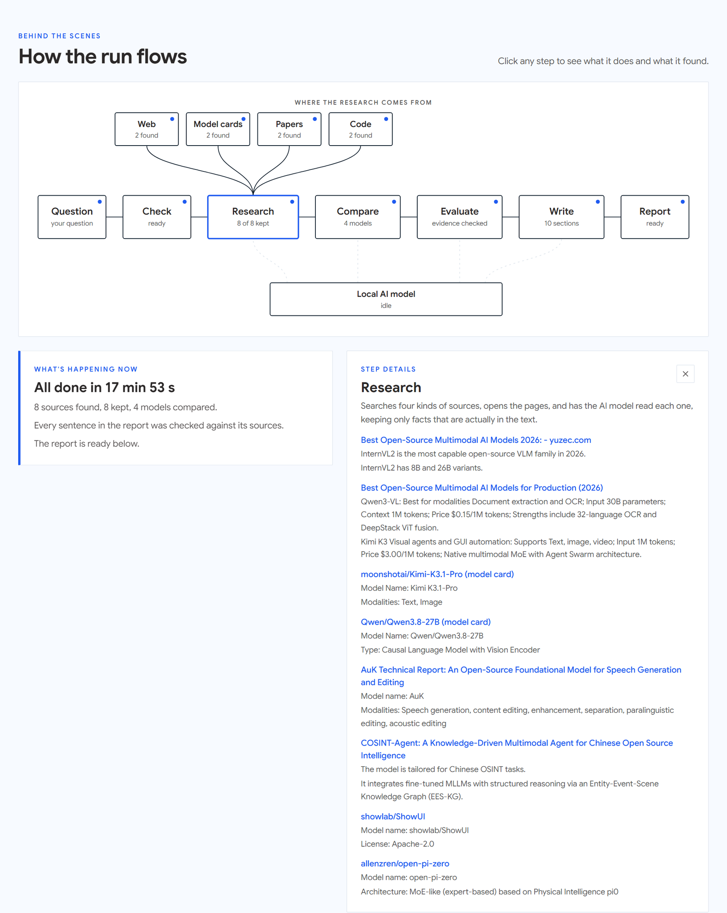
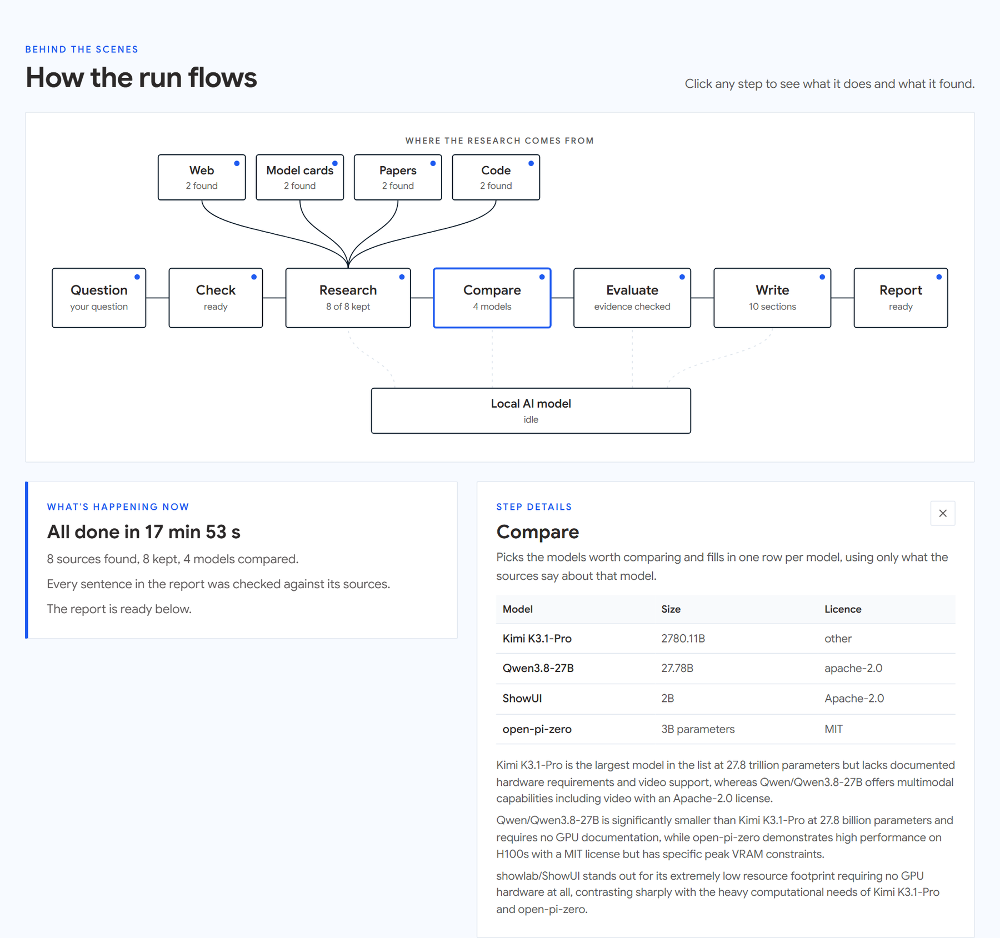
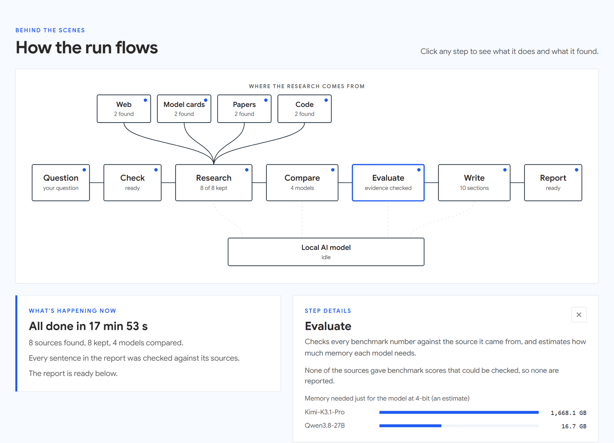
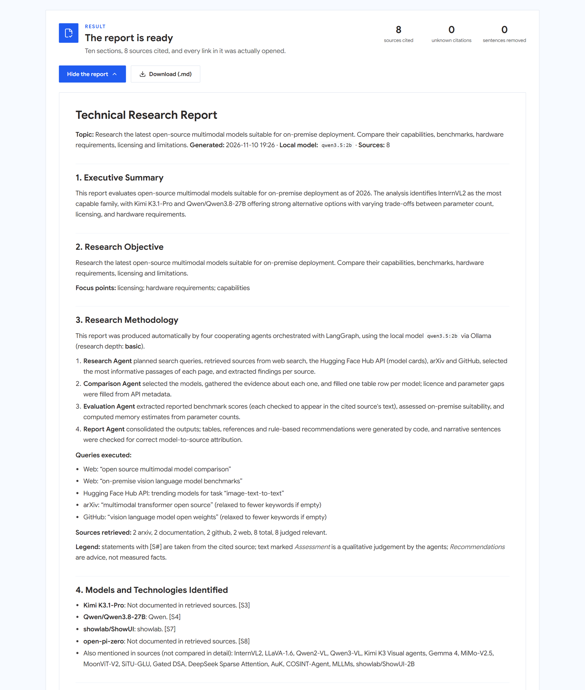
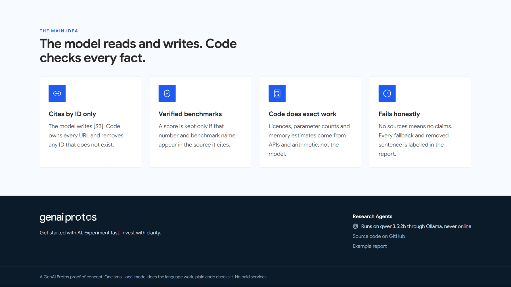
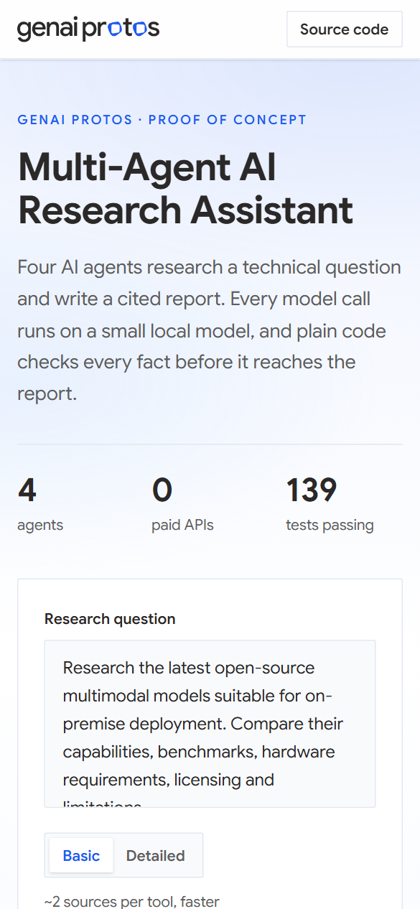
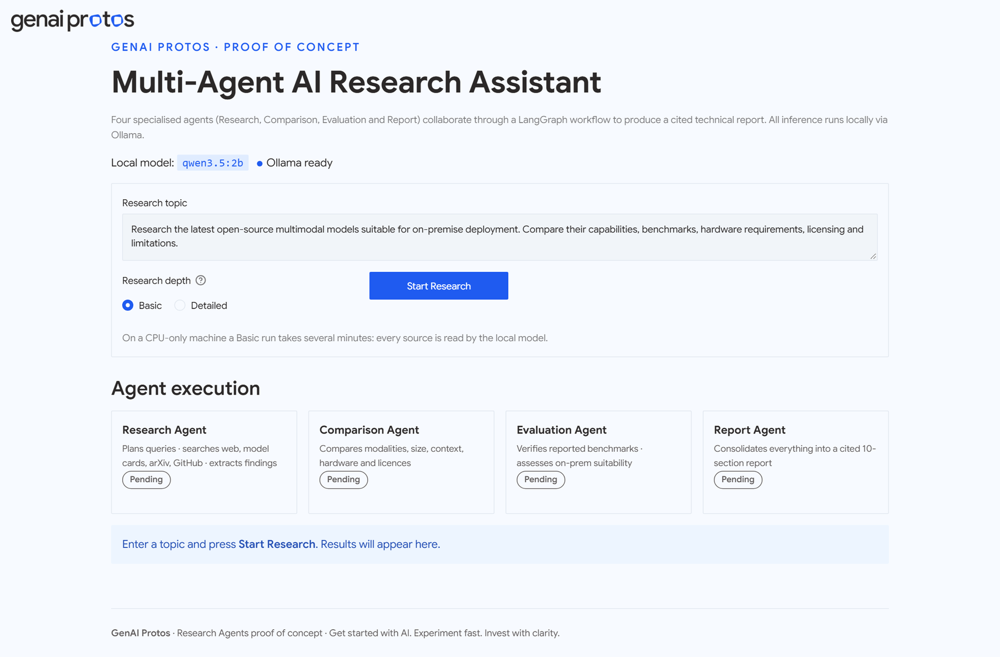
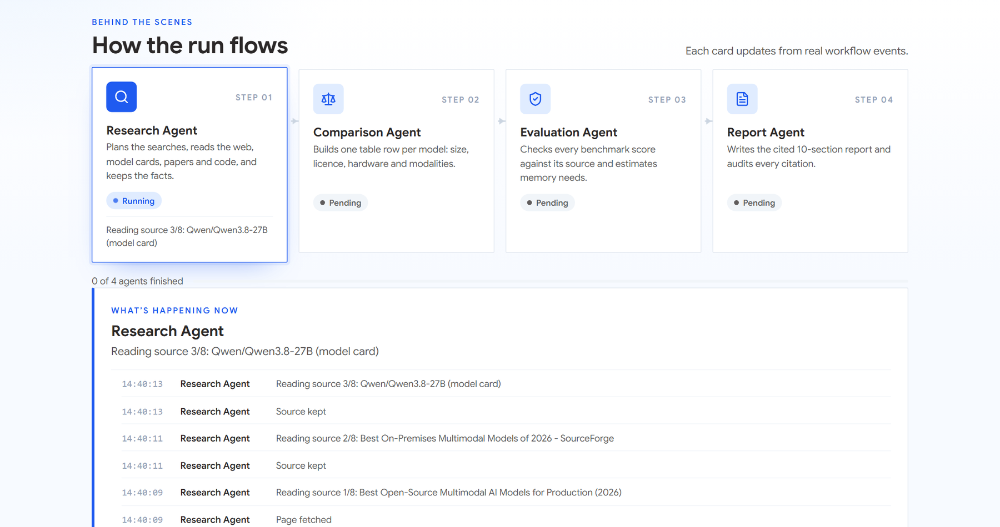
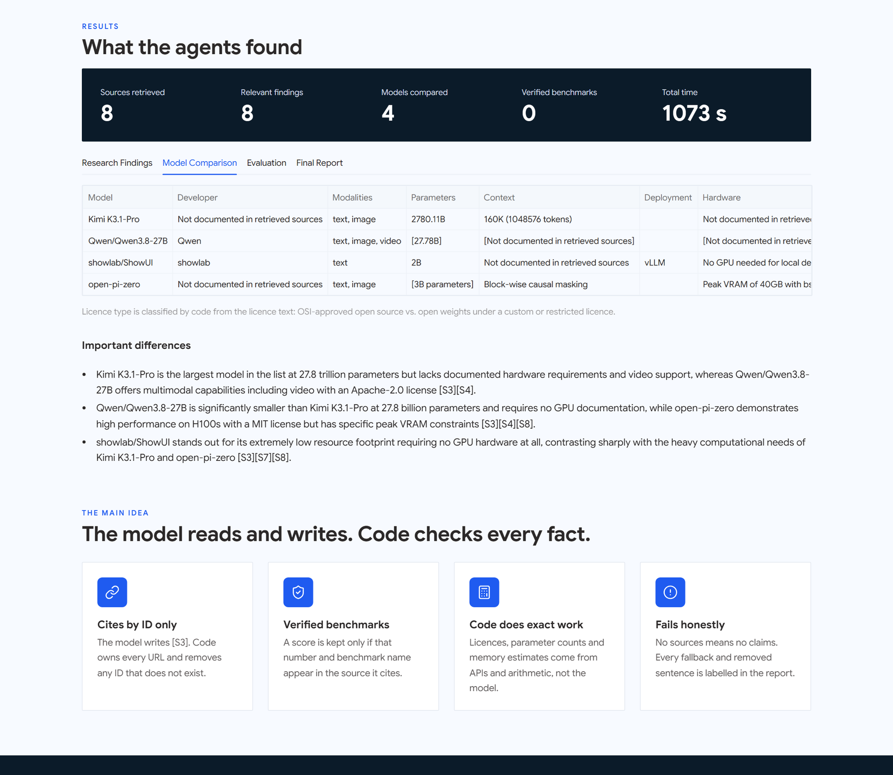
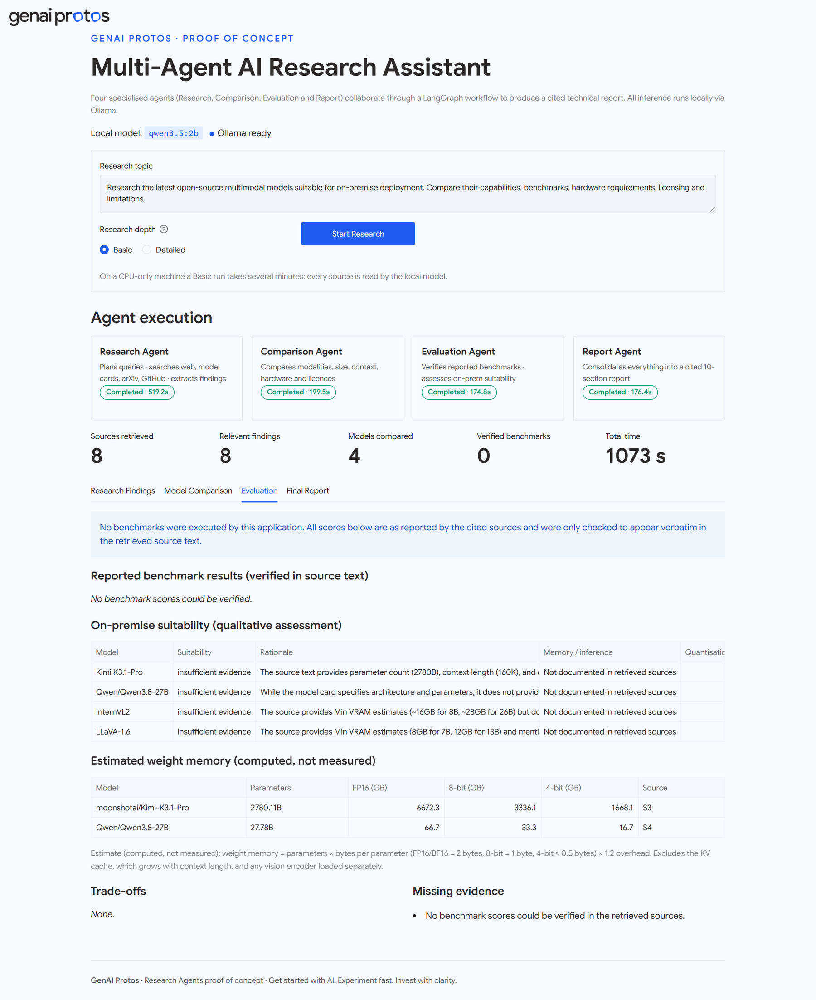
docs/poc-document/architecture-detailed.svg (plain SVG; opens in any browser, Figma, Inkscape or draw.io). A PNG copy is in docs/poc-document/images/.| Area | Tool (version used) | Role |
|---|---|---|
| Language | Python 3.12.9 (3.11+ supported) | Backend, agents, tests |
| Orchestration | LangGraph 1.2.20 | StateGraph workflow, reducers, live event stream |
| Local model runtime | Ollama 0.40.x | Serves Qwen3.5 on localhost:11434 |
| Model | Qwen3.5 (qwen3.5:2b used; qwen3.5:4b default) | Planning, reading, row filling, writing (Part B) |
| Validation | Pydantic 2.14.3 | Schemas for every model answer and agent output |
| Retrieval | ddgs 9.16.1; Requests 2.34.2; BeautifulSoup 4.15.0 | Web search with engine fallback; HTTP; HTML to text |
| External APIs | Hugging Face Hub API, arXiv Atom API, GitHub REST API | Model cards with licence and parameter count; papers; repositories (optional GITHUB_TOKEN) |
| Interface 1 | Streamlit 1.67.0, pandas 3.1.1 | Branded app with live agent cards and result tabs |
| Interface 2 | Next.js 16.4.5, React 19.3.0, Tailwind CSS 4.3.5, Motion 14.11, lucide-react 1.70, react-markdown 10.1 | Branded flow page (Node.js 20+; 22.14 used) |
| API | FastAPI 0.162.2, Uvicorn 0.54.0 | Streams the workflow to the web page |
| Tests | pytest 9.2.0 | 139 offline tests |
| Hosting (demo) | Vercel | Static replay site; redeploys on every push |
.env)| Variable | Default | Meaning |
|---|---|---|
OLLAMA_MODEL | qwen3.5:4b | Which local model to use (qwen3.5:2b on machines with 3 to 6 GB free RAM) |
OLLAMA_HOST | http://localhost:11434 | Where Ollama runs |
OLLAMA_TEMPERATURE | 0.1 | Low, for factual work |
OLLAMA_NUM_CTX | 8192 | Context window sent to Ollama (tokens) |
OLLAMA_TIMEOUT | 600 | Seconds to wait for one model answer |
GITHUB_TOKEN | empty | Optional; raises the GitHub search rate limit. Never logged |
CACHE_TTL_HOURS | 24 | Retrieval cache lifetime; empty results are never cached |
All tests run offline in about 6 to 10 seconds: Ollama and every network call are replaced by fakes, so results are repeatable. The full list is in docs/test_results.txt.
| Test file | Tests | What it proves |
|---|---|---|
test_schemas.py | 22 | Validation of every structured answer, URL checks, placeholder values |
test_comparison_agent.py | 18 | Invented model names ignored, per-model evidence, citations set by code, API metadata, failed steps reported |
test_retrieval.py | 16 | arXiv, GitHub, Hugging Face and web parsing; rate limits; offline; robots.txt; search-engine fallback |
test_ollama_client.py | 15 | Structured output, malformed output and retry, missing model, server down, out of memory, cloud models refused |
test_research_agent.py | 15 | One failed tool does not stop research, de-duplication, query relaxation, honest extraction fallback |
test_citations.py | 14 | Citation consistency, unknown IDs stripped, licence classification |
test_report_agent.py | 12 | 10 sections in order, references are real URLs, misattributed sentences removed, fallback report |
test_workflow.py | 9 | Execution order, shared-state merging, live events, abort paths, one failing agent does not stop the rest |
test_evaluation_agent.py | 6 | Fabricated benchmark numbers rejected, unsupported assessments downgraded |
test_api.py | 6 | API health, event stream order, crash reported as an event, one run at a time |
test_app.py, test_cache.py | 3 + 3 | Branded Streamlit page renders, Start disabled when Ollama is down, full results render; cache expiry |
Question: the on-premise multimodal models example above. Depth Basic, model qwen3.5:2b, i5-1155G7 laptop, 8 GB RAM, CPU only, 10 November 2026.
| Agent | Time | Output |
|---|---|---|
| Research | 519 s | 8 sources (2 web, 2 Hugging Face model cards, 2 arXiv, 2 GitHub); all 8 judged relevant |
| Comparison | 199 s | 4 models compared: Kimi K3.1-Pro, Qwen3.8-27B, ShowUI, open-pi-zero |
| Evaluation | 175 s | 0 verified benchmarks (none in the retrieved text); 2 memory estimates |
| Report | 176 s | 10 sections; 8 sources cited; 0 unknown citations; 0 sentences removed |
| Total | 1,073 s | 0 errors. Full record: outputs/example_run.json |
The unit tests with a fake model passed from the start. The problems only showed up when I ran the whole thing nine times with the real model and the real internet. Every fix below has a regression test named after the failure.
| Run | What went wrong | Fix |
|---|---|---|
| 1 | The model wrote queries like [multimodal model] [on-premise]; GitHub returned nothing; arXiv matched “premise-induced hallucination”; 0 findings yet a normal-looking report | Query cleaning, generic-word removal, one bounded relaxation, and a dedicated “insufficient evidence” report |
| 2 | Good articles judged irrelevant because the model only saw page menus; model-card search returned GPT-2 | Best-passage selection by code; task guard for multimodal topics |
| 3 | Empty comparison table from one big prompt | Comparison split into select, evidence, one row per model, differences |
| 4 to 5 | A failed step went unnoticed; empty “no results” cached for 24 h; only one search engine answered | Warnings surfaced; empty results never cached; fixed engine fallback chain |
| 6 | “Kimi K3” inherited Kimi K3.1-Pro’s 2.78 trillion parameters | Version-aware name matching |
| 7 | Architecture parts picked as models; a price in the licence column; a capability credited to the wrong model | Models with their own card always compared; licence sanity check; attribution check on prose |
| 8 | The attribution check removed a correct sentence | Strict matching for versioned names, whole-word matching for descriptive names |
A new failure I found on 18 November 2026 while preparing this document. An automatic Ollama update on 11 November removed Ollama’s inference engine and never put it back. Ollama still starts and lists the model, so the app’s start-up check passed, but every model call failed. The app did what it was designed to do. It used the fallback plan, marked Evaluation as Failed, showed the warnings and invented nothing. The run ended in under a minute with 0 models compared. Screenshot and details: Appendix D. The fix is to reinstall Ollama, and section 13 lists the code change I plan to make.
| Outcome | Measurement | |
|---|---|---|
| Report produced end to end on a laptop CPU | Measured | 1,073 s for 8 sources and 4 models (example run) |
| References are real | Measured | 8 of 8 references were retrieved URLs; 0 unknown citations |
| Running cost | Measured | 0 paid API calls; no API keys |
| Hardware needed | Measured | Runs in 8 GB RAM with qwen3.5:2b (2.7 GB on disk); the 4B model did not fit |
| Reliability of the code | Measured | 139 of 139 tests pass; 8 live failures fixed with regression tests |
| Expected benefit | Reasoning | |
|---|---|---|
| Faster first-pass research for consultants | Expected | A cited draft in about 18 unattended minutes instead of manual searching. Time saved was not measured against a person. |
| Lower risk of invented facts in client material | Expected | Citations, references, licences and numbers are controlled by code. Accuracy against known answers is not yet measured. |
| Better narrative quality with a larger model | Expected | Only OLLAMA_MODEL changes; most observed errors are small-model reasoning errors. |
| Much faster runs on a GPU | Expected | Almost all run time is model inference on the CPU. |
| Limitation | Details |
|---|---|
| Small-model reasoning | The 2B model is fine at pulling out facts but poor at reasoning about them (for example “27.8 trillion”). Code owns citations, numbers, licences and tables, but narrative sentences can still contain reasoning errors. Critical statements should be checked in the cited source. |
| Start-up check is shallow Found 18 Nov | The health check confirms that Ollama runs and the model is downloaded, not that it can generate. A broken runtime is only noticed at the first model call. |
| Results vary between runs | Search engines return different pages, so two runs of the same question can give different tables. |
| Free web search is fragile | Free engines often refuse automated clients. The tool tries several in turn and records which answered; if all fail, research continues with the other sources. |
| Narrow checks | The attribution check confirms that a cited source mentions the model a sentence names, not every claim in it. Benchmark verification is textual: number and name appear in the source, not necessarily together. |
| Model selection Found 18 Nov | Anything with its own GitHub repository or model card is always compared, so a tool can slip in as a “model”: in the 18 November run, SGLang (a serving tool) was compared and took Inkling-2-Small’s parameter count. The selection step should also check that every pick is a model. |
| Thin benchmark evidence | Model cards often put scores in images or long tables that the passages read do not reach, so runs often report that no score could be verified. |
| Shallow retrieval by design | About 2 to 4 sources per category; arXiv abstracts only (no PDF parsing); pages that need JavaScript give little text. |
| Rule-based licence categories | Conservative: unusual licence names (for example Hugging Face’s other) become “Unknown” rather than guessed. |
| Memory estimates are arithmetic | Weights only, no KV cache and no separately loaded vision encoder; labelled as estimates. |
| Speed | A Basic run takes about 10 to 18 minutes on a 4-core laptop CPU with the 2B model. |
| Demo site replays only | The hosted page replays a recorded run. Live runs need Ollama and the API on the same machine; one run at a time. |
Pre-sales
A consultant runs the client’s question before a workshop and brings a cited first comparison, then deepens it by hand.
On-premise
Deployed on a client’s own server or GPU workstation, so questions never leave the network; web search can be swapped for internal sources.
Internal R&D
Scheduled runs on recurring questions (“new open vision models this month”) to keep an R&D tracker current.
How it would be deployed. On a laptop for individual use, as it runs today; on an on-premise server with a GPU and a larger model for a team, with the FastAPI server behind the company network and the web page as the front end. Moving to a GPU and a bigger model only needs OLLAMA_MODEL to change.
Requirements: Python 3.11+, Ollama, internet access for retrieval; Node.js 20+ for the web page.
cd multi-agent-research-assistant python -m venv .venv .venv\Scripts\activate # macOS/Linux: source .venv/bin/activate pip install -r requirements.txt ollama pull qwen3.5:4b # or qwen3.5:2b with 3 to 6 GB free RAM copy .env.example .env # macOS/Linux: cp .env.example .env
# Streamlit app streamlit run app.py # http://localhost:8501 # Branded web page with live runs: two terminals python -m uvicorn api.server:app --port 8000 cd web && npm install && npm run build && npx next start -p 3000 # http://localhost:3000 # Command line, and the tests python -m orchestration.workflow "your question" basic python -m pytest
Troubleshooting. If runs end within a minute with “llama-server binary not found” in the warnings, the Ollama installation is incomplete (see Appendix D). Reinstall Ollama from ollama.com or with winget install --id Ollama.Ollama -e --force; downloaded models are kept. If memory is too low, the app suggests a smaller model.
Part B
Required because the solution uses a language model.
Qwen3.5 is a family of open-weight language models from Alibaba’s Qwen team. The small members ship with a vision encoder, so they can read images as well as text. The project runs it through Ollama, which downloads quantised model files and serves them on the local machine.
| Property | Value (from ollama show qwen3.5:2b) |
|---|---|
| Model used in all recorded runs | qwen3.5:2b · Ollama ID 0689d44085e0 · 2.7 GB on disk |
| Configured default | qwen3.5:4b (as required by the brief; about 3.3 GB download) |
| Architecture · parameters | qwen35 · 1.9B, plus a 331M-parameter vision projector (CLIP) |
| Quantisation | Q8_0 (8-bit) |
| Context length (model) | 262,144 tokens; the app uses 8,192 to save memory |
| Capabilities reported by Ollama | completion, vision, tools, thinking (thinking is switched off by the app) |
| Licence | Apache License 2.0 |
| Runtime | Ollama 0.40.x on Windows 11, CPU only |
Small open-weight models like this are mostly used where data has to stay on site or costs have to stay low, for example extracting structured data from documents, summarising and classifying text, drafting answers from approved sources, offline assistants on laptops and edge devices, and single steps inside larger pipelines where code checks the output. This POC uses it in that last way.
Observed strengths
Follows a JSON schema reliably through Ollama’s structured output; extracts facts from a passage well; produces usable search terms; writes readable summaries; runs on a CPU in 8 GB RAM.
Observed limitations
Weak arithmetic and comparison (“27.8 trillion”, “160K is larger than 1M”); sometimes puts a fact in the wrong field; fails at large multi-part tasks (empty table); slow on a CPU (about 18 minutes per run).
OLLAMA_MODEL.Other models could do this task too. What matters is which one fits this project best: local, free, CPU only, 8 GB of RAM and dependable structured output. I only ran the two Qwen3.5 sizes; the other rows were not tested here.
| Option | Licence | Tested here | Fit for this project |
|---|---|---|---|
| Qwen3.5 2B (used) | Apache 2.0 | Yes: 10+ full runs | Fits 8 GB; reliable JSON; weak reasoning, contained by code checks |
| Qwen3.5 4B (default) | Apache 2.0 | Yes: did not load (out of memory) | Better reasoning expected; needs about 4.5 GB free memory |
| Llama 3.2 3B | Llama Community Licence (custom) | No | Similar size; custom licence terms to review for commercial use |
| Gemma 3 4B | Gemma Terms of Use (custom) | No | Similar size; custom terms; would need its own memory test |
| Phi-4-mini | MIT | No | Permissive licence; would need testing for JSON reliability on this pipeline |
| Mistral 7B | Apache 2.0 | No | Larger; unlikely to fit beside other apps in 8 GB on CPU |
| Paid cloud models | Commercial | No (excluded) | Much stronger, but cost per call, data leaves the machine, API keys: ruled out by the brief |
Why Qwen3.5 is the better fit here. The brief asked for it, its Apache 2.0 licence is permissive, the 2B size runs on the hardware I had, and it returned valid structured output in every recorded run. The model is a single setting, so any of the alternatives can be tried later without changing code.
| Claim | Evidence |
|---|---|
| Runs on an 8 GB laptop, CPU only | Example run completed in 1,073 s with 0 errors (outputs/example_run.json) |
| The 4B default does not fit this laptop | Out-of-memory error when loading qwen3.5:4b (development log, README section 4) |
| Structured output is dependable | Every model answer is validated against a Pydantic schema; malformed answers are retried once and otherwise fall back with a label (tests in test_ollama_client.py) |
| Licence is permissive | Apache License 2.0, reported by ollama show |
| Nothing is fabricated in references | 0 unknown citations; references generated by code from retrieved sources |
I do not claim any benchmark scores for the model itself, because I did not run any.
| Setting | Laptop (as built) | Team pilot (suggested) |
|---|---|---|
| Hardware | 4-core CPU, 8 GB RAM, no GPU | Server or workstation with one GPU (for example 24 GB) |
| Model | qwen3.5:2b (2.7 GB) | qwen3.5:4b or larger |
| Software | Ollama, Python 3.11+, Node.js 20+ for the web page | Same, plus a reverse proxy and sign-in |
| Run time | About 10 to 18 minutes per Basic run | Expected to be much shorter on a GPU (not measured) |
| Network | Internet for web, Hugging Face, arXiv and GitHub; the model itself is offline | Same; web search could be swapped for internal sources |
| Cost | No licence or per-call fees; electricity only | Hardware cost only; no per-call fees |
| Demo hosting | Static replay page on Vercel | Internal hosting of the web page and API |
| Idea | Target user and problem | How the model would help | Data or integrations required |
|---|---|---|---|
| 1. Client model-selection brief | Consultants preparing recommendations spend hours gathering model facts, and must not show clients invented numbers | Runs the pipeline on the client’s requirements and drafts a cited comparison with licences, sizes and memory estimates | Existing web, Hugging Face, arXiv and GitHub tools; a client requirements template; export to the team’s document format |
| 2. On-premise policy and compliance research | Staff in regulated firms (banking, healthcare) need answers from internal policies without sending data to the cloud | The same agents, reading internal documents instead of the web, write cited summaries on site | Connectors to internal repositories (for example SharePoint or Confluence); internal search instead of web search; access control |
| 3. Open-source licence and risk check | Engineering and procurement teams must check the licences and restrictions of the models and libraries they adopt | Extracts licence terms and restrictions; code classifies open source vs open weights and flags custom terms | A list of dependencies (for example an SBOM); Hugging Face and GitHub metadata; the existing licence rules, extended |
Part C
Checklist from the team template, with where each item is.
| Deliverable | Status | Where |
|---|---|---|
| Working code, experiment or assessment | Done | GitHub repository; branded Streamlit app and web page |
| Completed project document | Done | POC Report in the team’s reference format: docs/poc-document/Research Agents - POC Report.docx. This document is the detailed technical version. |
| Architecture diagram and editable source | Done | Section 7; docs/poc-document/architecture-detailed.svg and images/architecture-detailed.png |
| Test results and failure examples | Done | Section 9; Appendix D; docs/test_results.txt |
| Setup and execution instructions | Done | Section 13; project README |
| Demo or walkthrough | Done | Live replay: research-agents-blush.vercel.app; walkthrough in section 6 |
| Model documentation | Done | Part B |
| Known limitations and recommendations | Done | Sections 11 and 13 |
| Short summary of findings for content development | Done | Below |
Suggested headline: “A small local model can write a trustworthy research report, if code checks every fact.”
We built an AI research team of four agents that runs on an ordinary laptop, with no GPU, no cloud API and no cost per question. Given a question such as “which open multimodal models can we run on-premise?”, it searches the web, Hugging Face, arXiv and GitHub, compares the models it finds and writes a 10-section report in about 18 minutes. The main lesson was that small models are good at reading and writing but unreliable with facts and arithmetic. So the model is only allowed to cite sources by number, and plain code owns every link, licence, parameter count and benchmark check. In our recorded run, every one of the 8 references was a real, retrieved page, and the report openly said when evidence was missing instead of inventing it.
Appendix D
A real run with a broken model runtime, 18 November 2026.
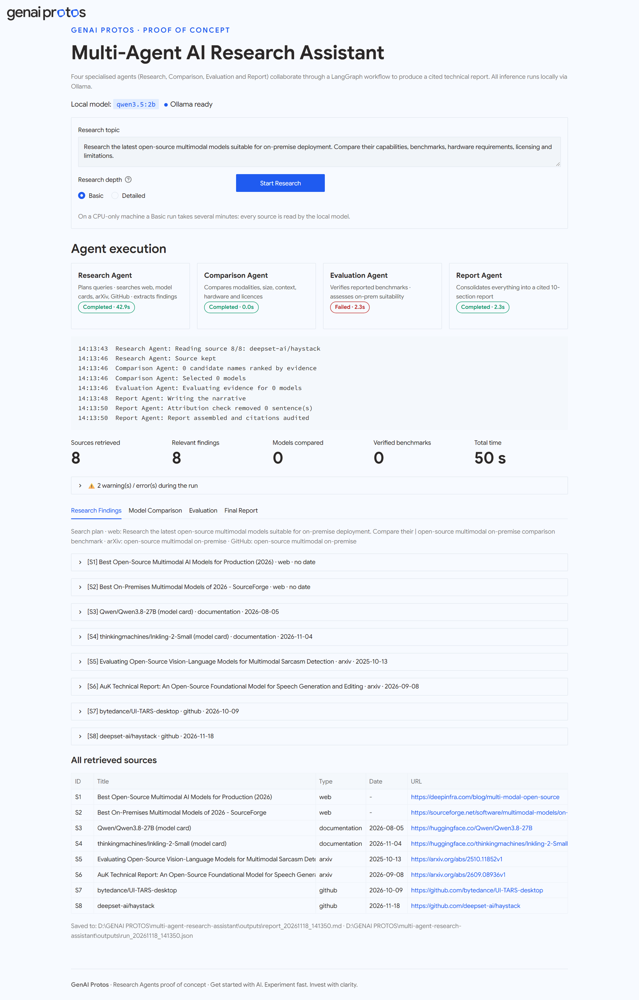
Root cause. Ollama’s upgrade log shows that the 11 November update ran the uninstaller, which deleted the lib\ollama folder containing the inference engine, but the new version was not fully installed. The server still starts and lists models, so the app’s start-up check passed.
What it shows. One broken dependency made the report weaker, not wrong, which is how I wanted failures to behave. It also showed a gap: the start-up check should run one tiny generation first. That is now the first item in my next steps.
| Term | Meaning |
|---|---|
| Agent | A step with one job, which uses the language model for part of it (here: Research, Comparison, Evaluation, Report) |
| LangGraph | A library that connects agents as a graph of steps with a shared state |
| Ollama | A free program that downloads and runs language models on your own computer |
| Open weights vs open source | Open weights: the model can be downloaded, possibly under custom terms. Open source: an OSI-approved licence such as Apache 2.0 or MIT |
| Quantisation | Storing model weights with fewer bits (for example 8-bit or 4-bit) to use less memory |
| Context window | How much text the model can read at once, measured in tokens |
| Hallucination | A confident statement by a model that is not supported by any source |
| Server-Sent Events | A simple way for a server to push live updates to a web page |